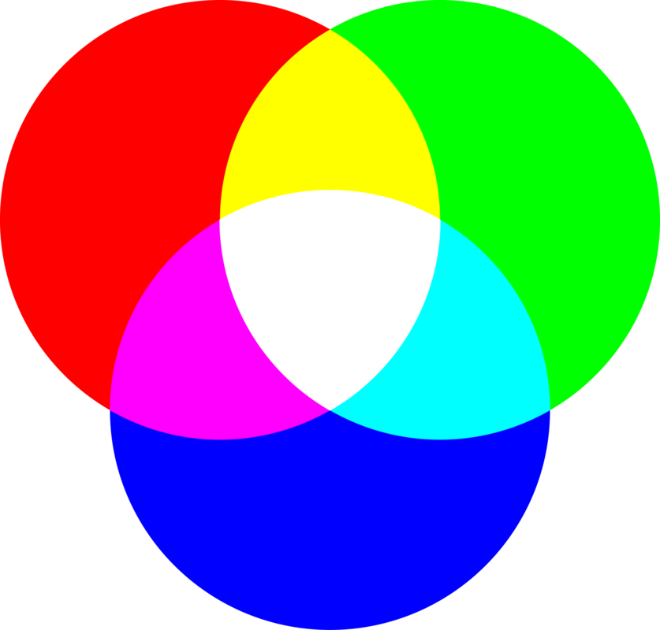
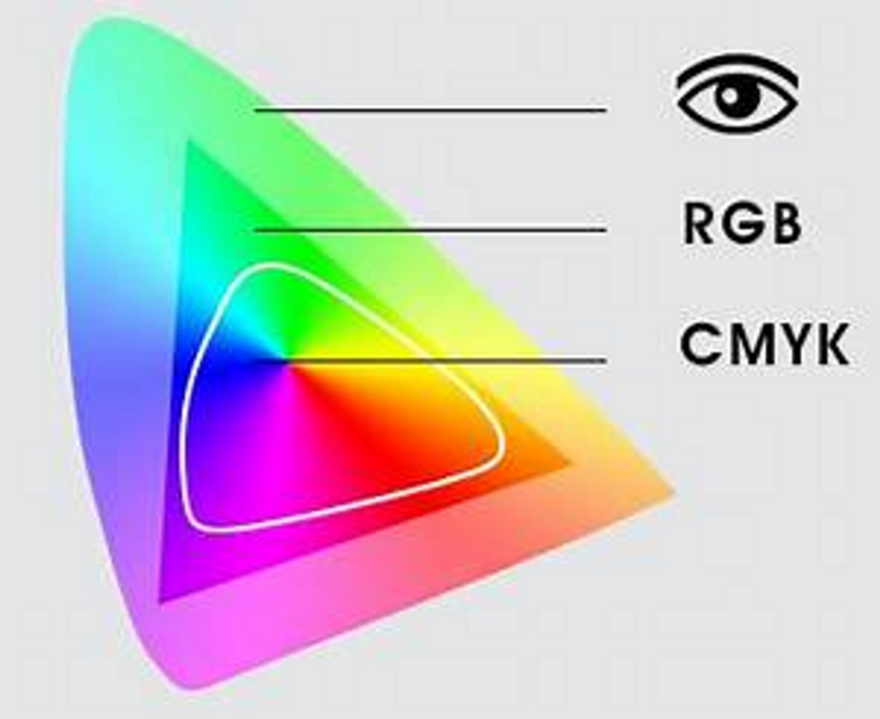
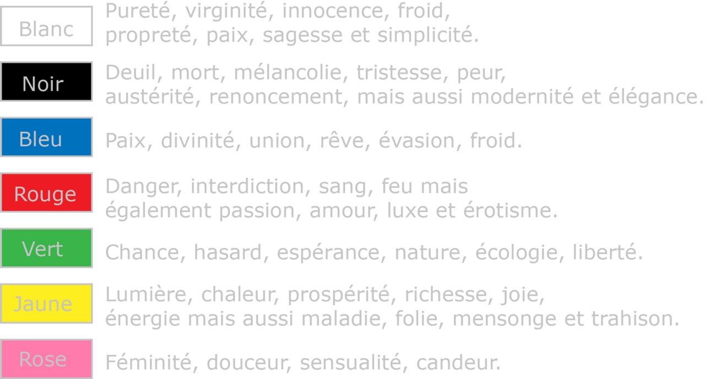
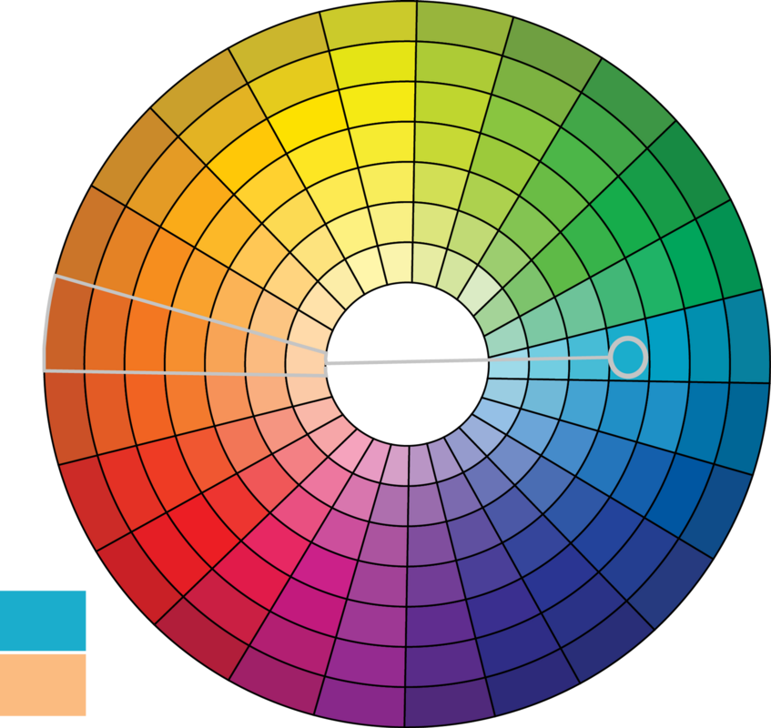
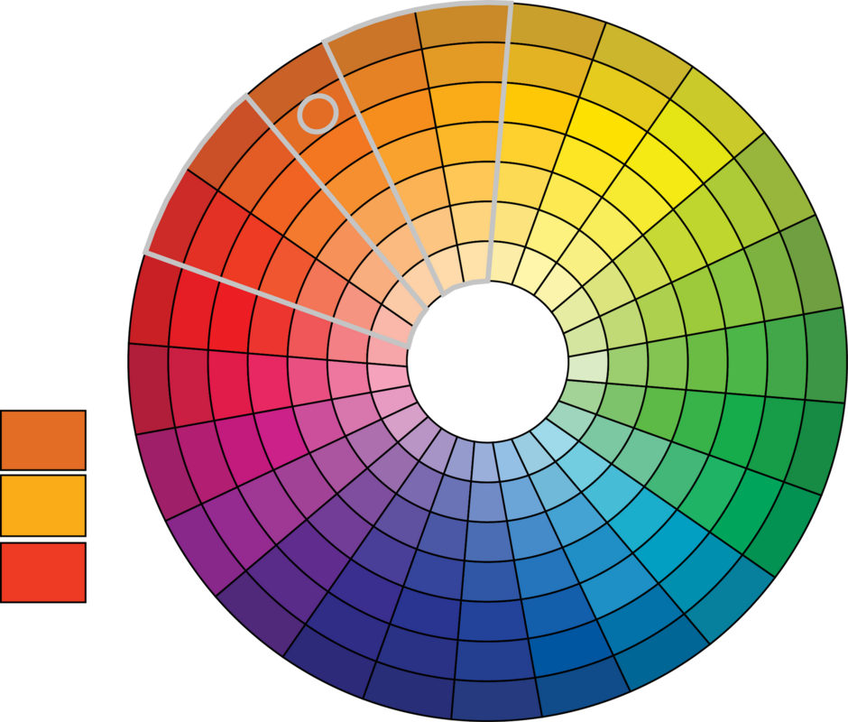
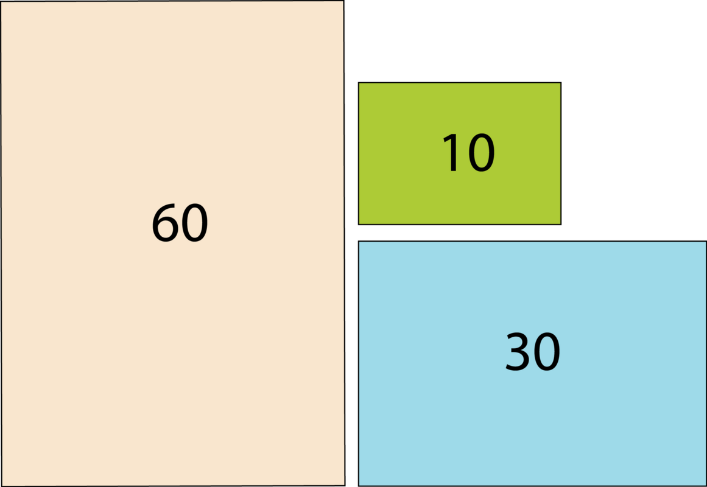
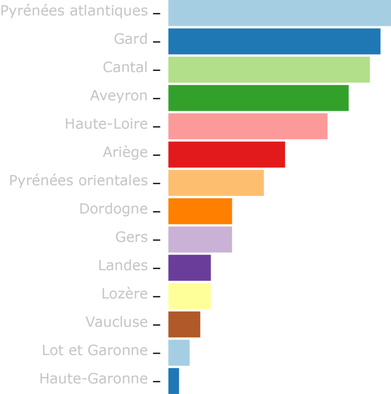
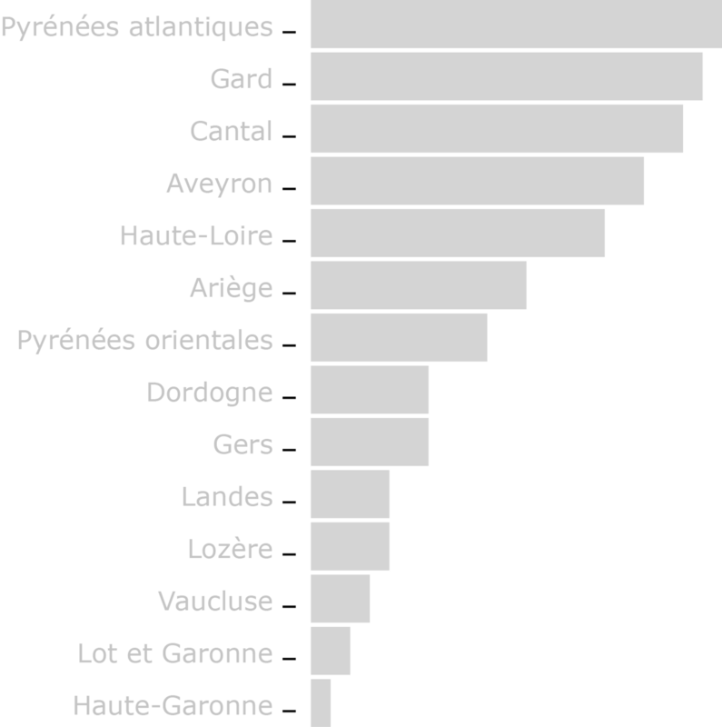
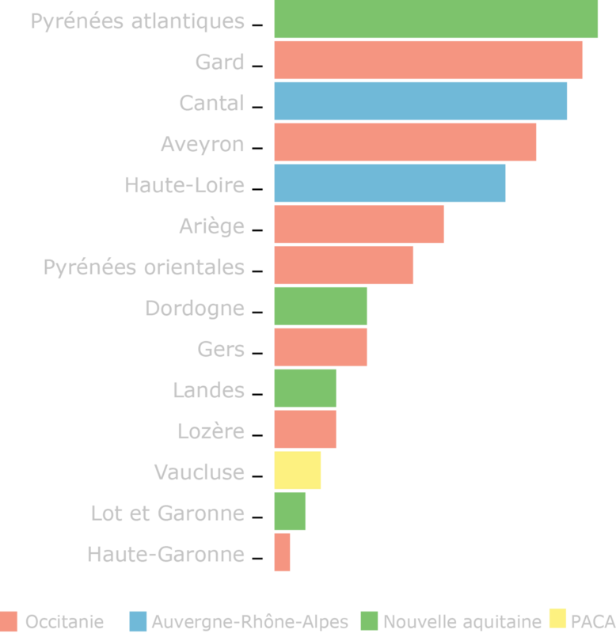

Historique
Température de couleurs
Les couleurs peuvent se ranger en famille
- les couleurs chaudes : elles évoquent l'énergie et la chaleur
- les couleurs froides : elles évoquent l'apaisement et la fraicheur
- Le blanc et le noir sont des couleurs froides

Les couleurs chaudes nous donnent l’impression de venir vers nous tandis que les couleurs froides ont tendance à reculer.
Modes colorimétriques
La synthèse additive

Les écrans et les projecteurs utilisent souvent le procédé de la synthèse additive. Ils ne dépendent pas d'un éclairage extérieur. Le procédé consistant à combiner les lumières de plusieurs sources colorées.
RGB (Rouge, Vert, Bleu)
Le mode couleur RGB est utilisé pour être visualisé à l’écran.
Chaque couleur R, G et B peut prendre une valeur de 0 à 255.
RGB hex
Le RGB hexadécimal (ou RGB hex) est un encodage de la couleur utilisant deux lettres hexadécimales (lettres allant de 0 à F) par canal (RGB). L’encodage est précédé d’un #. Ainsi le blanc s’encode comme suit : #FFFFFF et le noir de telle façon : #000000.
Le RGBA (Rouge, Vert, Bleu, Alpha)
Il définit une couleur et son opacité (transparence) à partir des trois couleurs de base (rouge, vert et bleu) et du paramètre alpha qui est une valeur numérique comprise entre 0 et 1, ou un pourcentage compris entre 0 et 100%.
La synthèse soustractive

La synthèse soustractive des couleurs est le procédé consistant à combiner l'absorption d'au moins trois colorants pour obtenir les nuances d'une gamme. Le mode couleurs CMYK est généralement utilisé par les imprimantes.
Le CYMK (Cyan, Magenta, Yellow, Black) = CMJN (Cyan, Magenta, Jaune et Noir)
Le mode couleurs CMYK est utilisé pour les supports imprimés, c'est un sous-ensemble de RGB, Il y a des couleurs en RGB qui ne peuvent pas être reproduites correctement en CMYK.
Chacune des quatre couleurs est exprimée en pourcentage.
Choix du support : écran ou papier ?
Félicitation ! Vous allez publlier votre datavisualisation. Elle sera affichée sur média, un écran ou si vous êtes chanceux, une affiche imprimée. Est-ce que les couleurs que vous aurez choisies avec soin seront fidelement reproduites ?
Toutes les couleurs peuvent être représentées dans un espace colorimétrique, un espace représentant l'ensemble des couleurs perceptibles, utilisables ou reproductibles par un être humain ou un appareil (un écran ou une imprimante).
Espaces colorimétriques : vision humaine, écran (RGB) et l’impression offset (CMYK)
Une dataviz est généralement produite sur un écran d’ordinateur, mais il faudra veiller à ce que le résultat imprimé corresponde à ce que vous attendiez : l’impression offset ne pouvant pas reproduire toutes les couleurs d’un écran.
Connotation des couleurs
La connotation des couleurs varie d’une culture à l’autre. Si ces codes ne sont pas considérés, votre visualisation peut être mal comprise.
En France :

Mais pour d’autres pays :
- Le rouge, symbole de pureté en Inde et symbole de beauté en Russie…
- Le vert est la couleur du mensonge en Chine et représente la jalousie aux USA…
- Le jaune est associé au commerce en Inde, à la royauté en Chine…
- ….
Harmonie des Couleurs
L’harmonie des couleurs est la combinaison de couleurs qui fonctionnera le mieux aux yeux de la plupart des personnes indépendamment de leurs goûts personnels. L’harmonie des couleurs est à considérer pour chaque graphique mais surtout pour les compositions de graphiques comme les tableaux de bord.
L’harmonie directe
L’harmonie directe également appelée harmonie complémentaire est la plus simple. Vous prenez tout simplement la couleur complémentaire qui est à l’opposé de la couleur principale sur le cercle chromatique.

L’harmonie par scission de la complémentaire
Il s’agit de sélectionner les couleurs se trouvant de chaque côté de la couleur complémentaire. Cela permet d’avoir accès à une gamme de couleurs plus large tout en déviant peu de l’harmonie directe. Le choix d’un jeu de couleurs de ce type est un choix sûr pour pratiquement toutes les compositions.
.png)
L’harmonie complémentaire triadique
Cette harmonie découle de la précédente, si ce n’est que l'on écarte un peu plus la distance de la couleur opposée à la couleur clé dans l’harmonie directe. Comme vous vous écartiez alors de la complémentaire directe, les couleurs sélectionnées sont à utiliser avec davantage de légèreté. Un peu trop dosées, et votre conception semblera comporter trop de couleurs.
.png)
L’harmonie analogique
Cette harmonie est idéale pour une conception tournant autour d’une seule teinte, et dont les couleurs utilisées ne s’éloignent pas trop de la couleur clé. Ces couleurs sont celles que l’on trouve directement à droite et à gauche de la couleur clé. Cela permet de réaliser une conception visuelle sans prendre trop de risques. Bien que cette harmonie puisse être agréable à l’œil, elle peut aussi facilement laisser une impression de monotonie et manquer de dynamisme.

L’harmonie tétraédrique
Semblable à l’harmonie triadique, à la différence qu’il y a quatre points d’ancrage sur le cercle et non plus trois, tous à égale distance. Bien que ce soit une harmonie de couleurs (au même titre que les autres), elle est plus délicate à utiliser correctement puisqu’elle couvre l’ensemble du cercle chromatique. Plus subtilement, les conceptions réussies sur ce modèle utilisent en réalité deux ensembles de couleurs complémentaires.
Cette harmonie a du sens quand vous avez de nombreux éléments qui doivent se démarquer les uns des autres, comme ce peut être le cas sur une affiche. Grâce à des couleurs à égale distance sur le cercle chromatique, chaque élément du visuel bénéficie d’une attention égale aux autres.
.png)
La règle des 60-30-10
60 % de l’espace pour la couleur principale, 30% pour la couleur secondaire et 10% la couleur d’accent. Appliqué à une composition graphique la couleur principale doit être claire et neutre, la secondaire préférentiellement une couleur complémentaire et enfin la troisième une couleur vive qui se démarque.
Ce n’est pas une règle absolue mais une aide.

Comme les accords en musique, une palette, un ensemble de couleurs, permet de rendre une datavisualisation attirante. Pour vous aider à composer une gamme de couleurs, il existe des outils gratuits sur le web :
Daltonisme (Colorblindness)
Un daltonien voit les choses aussi clairement que les autres, mais il est incapable de voir certaines couleurs. L’incapacité de différentier le vert du rouge ( Deutéranopie ) est la plus fréquente
En France, la proportion de daltoniens est d'environ :
- 8 % chez les hommes
- 0,4 % chez les femmes

- Evitez donc de choisir du bleu et du rouge pour différencier deux courbes !
- Utilisez des outils en ligne pour voir comment un diagramme sera vu par une personne daltonienne. - color blindness simulator - color blind simulator
Recommandations
Recommandation 1
Evitez les couleurs trop vives qui saturent l’œil, préférez des couleurs douces
Recommandation 2
Recherchez une harmonie dans le choix des couleurs notamment si les diagrammes doivent s’intégrer dans une infographie. Limitez le nombre de couleurs utilisées et essayer de maintenir une homogénéité dans les couleurs choisies. Aidez-vous des outils pour construire les palettes de couleurs.
Recommandation 3
Tenez compte de la symbolique des couleurs.
Par exemple :
- Pas de vert pour mettre en avant une information négative ou inversement le rouge pour une information positive
- Une température chaude en bleu et froide en rouge
Recommandation 4
Il est tentant de rajouter de la couleur à vos visualisations mais la couleur n’améliore pas toujours la lisibilité d’un diagramme.
Utilisez des couleurs seulement quand c’est nécessaire, uniquement pour mettre en avant des informations.
Les couleurs n’apportent aucune information et rendent le diagramme moins lisible.
.png)
Le diagramme est plus lisible sans couleur.
Les couleurs fournissent une information complémentaires.
Recommandation 5
Les couleurs chaudes illustrent généralement des indices plus importants que les couleurs froides. Cette caractéristique est majeure et doit être considérée dans le choix de vos couleurs en fonction des informations communiquées.
Recommandation 6
Choisissez un fond d’écran blanc, noir ou gris. il ne doit pas venir distraire l’œil et l’attention du lecteur.